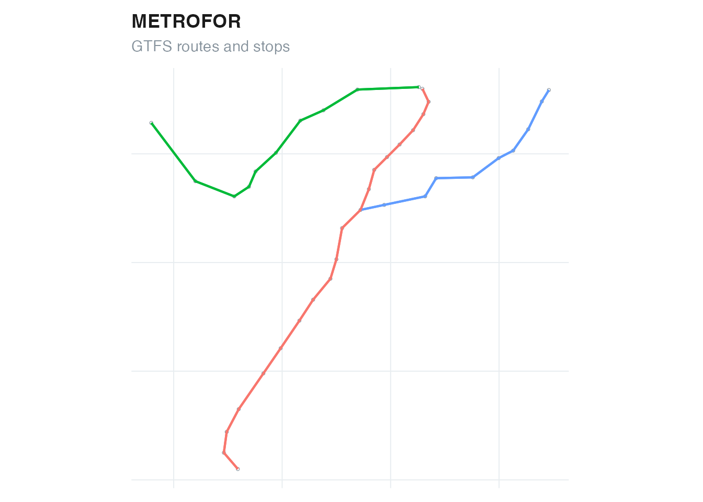

GTFSwizard creates, reads, validates, explores, edits, and exports
General Transit Feed Specification (GTFS) Schedule feeds. Its functions
work with a wizardgtfs object: a named list of GTFS tables
plus a dates_services table that connects calendar dates,
services, and service patterns.
Use an included feed
The package includes two real, reduced examples from Fortaleza,
Brazil. for_rail_gtfs is small enough for learning and
examples; for_bus_gtfs is useful for checking workflows on
a larger bus network.
library(GTFSwizard)
gtfs <- for_rail_gtfs
summary(gtfs)
#> <summary.wizardgtfs>
#> Agency: METROFOR
#> Service: 2020-01-02 to 2021-12-31 (614 active dates)
#> 3 routes; 215 trips; 39 stops; 6 shapes
#> Median consecutive-stop spacing: 1144.6 m
#>
#> Tables:
#> agency calendar calendar_dates routes stops
#> 1 1 26 3 39
#> stop_times trips shapes
#> 3420 215 80Access an individual GTFS table with the usual list syntax.
head(gtfs$routes)
#> # A tibble: 3 × 9
#> route_id route_short_name route_long_name route_desc route_type route_url
#> <chr> <chr> <chr> <chr> <int> <chr>
#> 1 8 "" VLT Parangaba Papicu "" 1 ""
#> 2 6 "" Linha Sul "" 1 ""
#> 3 7 "" Linha Oeste "" 1 ""
#> # ℹ 3 more variables: route_color <chr>, route_text_color <chr>,
#> # agency_id <chr>
head(gtfs$stops)
#> # A tibble: 6 × 10
#> stop_id stop_code stop_name stop_desc stop_lat stop_lon zone_id stop_url
#> <chr> <chr> <chr> <chr> <dbl> <dbl> <chr> <chr>
#> 1 66 "" Papicu "" -3.74 -38.5 "" ""
#> 2 65 "" Antônio Sales "" -3.75 -38.5 "" ""
#> 3 64 "" Pontes Vieira "" -3.75 -38.5 "" ""
#> 4 63 "" São João do Ta… "" -3.76 -38.5 "" ""
#> 5 41 "" Borges de Melo "" -3.76 -38.5 "" ""
#> 6 40 "" Vila União "" -3.77 -38.5 "" ""
#> # ℹ 2 more variables: location_type <int>, stop_timezone <chr>Read an existing feed
read_gtfs() reads a GTFS zip archive and validates its
required tables, fields, identifiers, sequences, dates, and times.
Supply the archive path explicitly. To choose a file interactively, call
explore_gtfs() without a feed in an interactive R
session.
gtfs <- read_gtfs("path/to/feed.zip")
explore_gtfs() # choose a zip file and open the dashboardUse as_wizardgtfs() when the GTFS tables are already
available as a named list. If shapes.txt is absent, the
default behavior infers straight lines from ordered stop coordinates for
analysis and visualization.
converted <- as_wizardgtfs(unclass(for_rail_gtfs))
inherits(converted, "wizardgtfs")
#> [1] TRUECreate a feed from tables
create_gtfs() validates the supplied tables using the
same package rules. A feed must define service using
calendar, calendar_dates, or both.
created <- create_gtfs(
agency = data.frame(
agency_id = "A",
agency_name = "Demo Transit",
agency_url = "https://example.com",
agency_timezone = "America/Fortaleza"
),
routes = data.frame(
route_id = "R1", agency_id = "A", route_short_name = "1",
route_long_name = "Central", route_type = 3
),
trips = data.frame(
route_id = "R1", service_id = "WK", trip_id = "T1"
),
stop_times = data.frame(
trip_id = "T1",
arrival_time = c("08:00:00", "08:10:00"),
departure_time = c("08:00:00", "08:10:00"),
stop_id = c("S1", "S2"),
stop_sequence = 1:2
),
stops = data.frame(
stop_id = c("S1", "S2"),
stop_name = c("First", "Second"),
stop_lat = c(-3.73, -3.74),
stop_lon = c(-38.52, -38.53)
),
calendar = data.frame(
service_id = "WK",
monday = 1, tuesday = 1, wednesday = 1, thursday = 1,
friday = 1, saturday = 0, sunday = 0,
start_date = "20260101", end_date = "20261231"
)
)
#> GTFSwizard: building straight-line shapes from ordered stop coordinates.
created
#> <wizardgtfs>
#> Agency: Demo Transit
#> 1 routes; 1 trips; 2 stops
#>
#> $agency [1 rows]
#> # A tibble: 1 × 4
#> agency_id agency_name agency_url agency_timezone
#> <chr> <chr> <chr> <chr>
#> 1 A Demo Transit https://example.com America/Fortaleza
#>
#> $routes [1 rows]
#> # A tibble: 1 × 5
#> route_id agency_id route_short_name route_long_name route_type
#> <chr> <chr> <chr> <chr> <dbl>
#> 1 R1 A 1 Central 3
#>
#> $trips [1 rows]
#> # A tibble: 1 × 4
#> route_id service_id trip_id shape_id
#> <chr> <chr> <chr> <chr>
#> 1 R1 WK T1 shape-1
#>
#> $stop_times [2 rows]
#> # A tibble: 2 × 5
#> trip_id arrival_time departure_time stop_id stop_sequence
#> <chr> <chr> <chr> <chr> <int>
#> 1 T1 08:00:00 08:00:00 S1 1
#> 2 T1 08:10:00 08:10:00 S2 2
#>
#> $stops [2 rows]
#> # A tibble: 2 × 4
#> stop_id stop_name stop_lat stop_lon
#> <chr> <chr> <dbl> <dbl>
#> 1 S1 First -3.73 -38.5
#> 2 S2 Second -3.74 -38.5
#>
#> $calendar [1 rows]
#> # A tibble: 1 × 10
#> service_id monday tuesday wednesday thursday friday saturday sunday start_date
#> <chr> <dbl> <dbl> <dbl> <dbl> <dbl> <dbl> <dbl> <date>
#> 1 WK 1 1 1 1 1 0 0 2026-01-01
#> # ℹ 1 more variable: end_date <date>
#>
#> $shapes [2 rows]
#> # A tibble: 2 × 5
#> shape_id shape_pt_lat shape_pt_lon shape_pt_sequence shape_dist_traveled
#> <chr> <dbl> <dbl> <int> <dbl>
#> 1 shape-1 -3.73 -38.5 1 0
#> 2 shape-1 -3.74 -38.5 2 1571.Inspect and plot
The print method previews tables, summary() reports
system-level properties, and plot() draws the network.
Analytical functions return ordinary tibbles or sf objects
so they remain compatible with standard R workflows.
plot(gtfs)
#> Coordinate system already present.
#> ℹ Adding new coordinate system, which will replace the existing one.
Export a feed
write_gtfs() removes the internal
dates_services table, restores standard GTFS date and
spatial columns, and writes a zip archive.
output <- tempfile(fileext = ".zip")
write_gtfs(created, output)
file.exists(output)
#> [1] TRUE
unlink(output)Continue with service analysis, or learn how to filter and edit feeds.